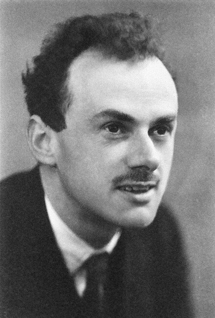
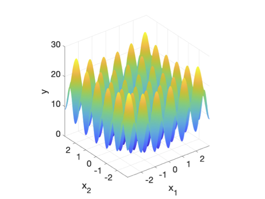
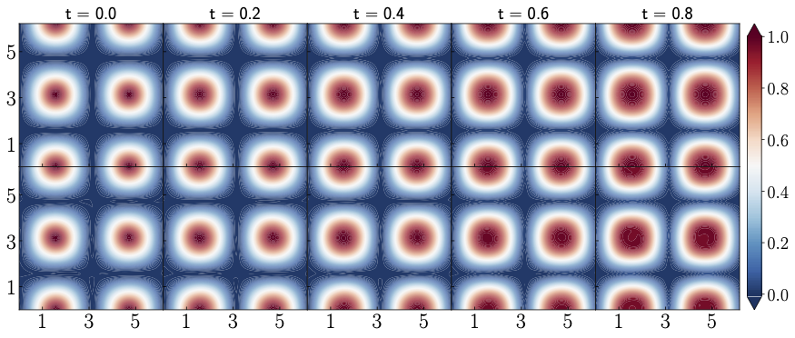
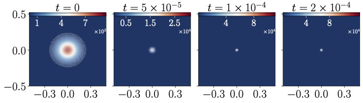

- Convergence: M-CBO converges to optimal policy
- Exponential decay: \(E[\rho_t] \leq E[\rho_0]e^{-(1-\tau)\lambda t}\)
主要工作及成果：多尺度建模背景

Dirac, Paul Adrien Maurice.
Quantum mechanics of many-electron systems.
The right physical principle for most of what we are interested in is already provided by the principles of quantum mechanics (QM).
The ability to reduce everything to simple fundamental laws does not imply the ability to start from those laws and reconstruct the universe.
The constructionist hypothesis breaks
down when confronted with the twin
difficulties of scale and complexity.
Anderson, Philip W.
More Is Different: Broken symmetry and the nature of the hierarchical structure of science.
Scale - High Dimensionality - Curse of Dimensionality
Complexity - Empirical Model - Oversimplification
Mori-Zwanzig Formalism
The dynamics of coarse-grained (CG) variables follow:
\[
\begin{aligned}
\dot{\mathbf{Q}} &= \mathbf M^{-1} \mathbf{P} \\
\dot{\mathbf{P}} &= -\nabla U(\mathbf{Q}) - \int_0^t \mathbf{K}(\mathbf{Q}(s), t-s) \mathbf{V}(s) ds + \mathbf{R}(t)
\end{aligned}
\]
- General framework from Mori-Zwanzig
- In practice: simple ad hoc approximations
- Memory oversimplification: under-explored
Ad hoc Approximations
In the Mori-Zwanzig formalism, the dynamics of the coarse-grained (CG) variables are unknown. Many existing models make simplifying approximations:
- Markovian-Pairwise
- \( \sum_{j} \mathbf{K}(Q_{ij}) \mathbf{V}_j . \)
- Non-Markovian Isotropic
- \( \int_0^t \mathbf{K}(t-s) \mathbf{V}(s). \)
- Non-Markovian Pairwise (NM-DPD)
- \( \sum_j \int_0^t \mathbf{K}(Q_{ij}, t-s) \mathbf{V}_{ij}(s) \, ds. \)
- 🚀 Non-Markovian Manybody (Our Model)
- \( \bm{\Xi}(\mathbf{Q}) \int_0^t e^{- \bm{\Lambda} (t-s)} \bm{\Xi}(\mathbf{Q})^T \mathbf{V}_{ij}(s) \, ds, \)
where \( \bm{\Xi}\) is neural network encode the manybody and \( \bm{\Lambda} \) are learnable parameters encode the Non-Markovian.
Liyao Lyu, Huan Lei*.
Construction of coarse-grained molecular dynamics with many-body non-Markovian memory.
Physical Review Letters, 2023.
Important New Issues
-
To accurately model many-body dynamics, our neural network must respect physical symmetries:
-
Translation Invariance:\(\mathbf{\Xi}(\bQ_1 +\mathbf{b},\cdots,\bQ_M +\mathbf{b}) = \mathbf{\Xi}(\bQ_1,\cdots,\bQ_M)\)
-
Rotation Symmetry: \(\mathbf{\Xi}_{ij}(\mathrm{U}\bQ_1,\cdots,\mathrm{U}\bQ_M) = \mathrm{U}\mathbf{\Xi}_{ij}(\bQ_1,\cdots,\bQ_M)\mathrm{U}^T\)
- Permutation Symmetries: \(\mathbf{\Xi}_{ij}(\bQ_{\sigma(1)},\cdots,\bQ_{\sigma(M)}) = \mathbf{\Xi}_{\sigma(i)\sigma(j)}(\bQ_1,\cdots,\bQ_M)\)
-
Translation Invariance:\(\mathbf{\Xi}(\bQ_1 +\mathbf{b},\cdots,\bQ_M +\mathbf{b}) = \mathbf{\Xi}(\bQ_1,\cdots,\bQ_M)\)
- Extensive
\(\mathbf{\Xi}\)( , , )
| Ξ11 | Ξ12 | Ξ13 |
| Ξ21 | Ξ22 | Ξ23 |
| Ξ31 | Ξ32 | Ξ33 |
\(\mathbf{\Xi}\)( , , )
| Ξ11 | Ξ12 | Ξ13 |
| Ξ21 | Ξ22 | Ξ23 |
| Ξ31 | Ξ32 | Ξ33 |
Neural Network Representation
🚀 Non-Markovian Manybody (Our Model)
\[
\dot{\mathbf{P}} = \mathbf{F}^C - \bm{\Xi}(\mathbf{Q}) \int_0^t e^{- \bm{\Lambda} (t-s)}
\bm{\Xi}(\mathbf{Q})^T \mathbf{V}_{ij}(s) \, ds + \mathbf{R}(t),
\]
- Introducing coordinate feature \(\hat{\mathbf Q}^k_i\): \( \hat{ \mathbf Q}^k_i = \mathbf{Q}_i \oplus \sum_{l\in\mathcal{N}_i} f^k(|\mathbf{Q}_{il}|)\,\mathbf{Q}_{il} \)
- Compute the distance on the feature: \( \hat{\mathbf{Q}}_{ij}^{k} = \hat{\mathbf{Q}}_i^{k} - \hat{\mathbf{Q}}_j^{k} \)
- Construct the state dependent part of the memory kernel: \( \boldsymbol{\Xi}^n_{ij} = \sum_{k=1}^K h_{n,k}(\hat{ \mathbf Q}_{ij}^T \hat{ \mathbf Q}_{ij}) \hat{ \mathbf Q}_{ij}^k \otimes \hat{ \mathbf Q}_{ij}^k \)


Numerical Result
Velocity auto correlation function (VACF)
\[ c(t)=\frac{\lt V_i(t) \cdot V_i(0) \gt }{ \lt V_i(0) \cdot V_i(0) \gt } \]
| Model | Temporal | Spatial |
|---|---|---|
| M-DPD | Markovian | Pairwise |
| NM-GLE | Non-Markovian | Isotropic |
| NM-DPD | Non-Markovian | Pairwise |
| NM-MB | Non-Markovian | Manybody |
Numerical Result
Velocity cross correlation function (VCCF)
\[ C^{xx}(t; r_0) = \mathbb{E}[\mathbf{V}_i(0)\cdot\mathbf{V}_j(t) \vert Q_{ij}(0) = r_0] \]
| Model | Temporal | Spatial |
|---|---|---|
| M-DPD | Markovian | Pairwise |
| NM-GLE | Non-Markovian | Isotropic |
| NM-DPD | Non-Markovian | Pairwise |
| NM-MB | Non-Markovian | Manybody |
Numerical Result
van Hove function (VHF)
\( G(r, t) \propto \frac{1}{M^2} \sum_{j\neq i}^M \delta(\Vert \mathbf{Q}_i(t) - \mathbf{Q}_j(0)\Vert - r) \).
| Model | Temporal | Spatial |
|---|---|---|
| M-DPD | Markovian | Pairwise |
| NM-GLE | Non-Markovian | Isotropic |
| NM-DPD | Non-Markovian | Pairwise |
| NM-MB | Non-Markovian | Manybody |
Numerical Result
normalized correlations of the
Longitudinal Hydrodynamic Modes
Longitudinal Hydrodynamic Modes
\[ \begin{split} C_L(t) &= \langle \tilde{u}_1(t)\tilde{u}_1(0)\rangle \\ \tilde{\mb u} &= \frac{1}{M}\sum_{j=1}^M \mb V_j {\rm e}^{i\mb k \cdot \mb Q_j} \end{split} \]
| Model | Temporal | Spatial |
|---|---|---|
| M-DPD | Markovian | Pairwise |
| NM-GLE | Non-Markovian | Isotropic |
| NM-DPD | Non-Markovian | Pairwise |
| NM-MB | Non-Markovian | Manybody |
Numerical Result
normalized correlations of the
Transverse Hydrodynamic Modes
Transverse Hydrodynamic Modes
\[ \begin{split} C_T(t) &= \langle \tilde{u}_2(t)\tilde{u}_2(0)\rangle \\ \tilde{\mb u} &= \frac{1}{M}\sum_{j=1}^M \mb V_j {\rm e}^{i\mb k \cdot \mb Q_j} \end{split} \]
| Model | Temporal | Spatial |
|---|---|---|
| M-DPD | Markovian | Pairwise |
| NM-GLE | Non-Markovian | Isotropic |
| NM-DPD | Non-Markovian | Pairwise |
| NM-MB | Non-Markovian | Manybody |
Extension to Nonequilibrium
- Predicting non-equilibrium processe, i.e. evolution under an external force field \(V_{\text{ext}}(\bq)\).
-
For a given configuration \(\bm {Q}\), theoretically:
\( \mb K(\bm {Q}, t) = \mathcal{P}_{\mb Z}[({\rm e}^{\mathcal{Q}_{\bm Z} \mathcal{L} t}\mathcal{Q}_{\bm Z} \mathcal{L}\mb P) (\mathcal{Q}_{\bm Z} \mathcal{L}\mb P)^T], \)
where the projection operator: \( \mathcal{P}_{\bm Z} f(\mb z) := \mathbb{E}[f(\mb z) \vert \phi(\mb z) = \bm Z ]. \) -
The Kernel depends on the conditional probability distribution \( \rho_{V_{\text{ext}}}(\bz|\bZ) = \frac{1}{Z} \delta(\phi(\bz)-\bZ) \rho_{V_{\text{ext}}}(\bz) \)
-
The Time dependent projection result in \(K(\bQ,t,s)\):
\( \dot{\mathbf{P}}(t) = -F(\mathbf{Q}) - \int_0^t \mathbf{K}(\mathbf{Q}(s), t,s)\,\mathbf{V}(s)\,ds + \mathbf{R}(t). \)
Hermann Grabert.
Projection Operator Techniques in Nonequilibrium Statistical Mechanics.
Springer Tracts in Modern Physics, 1982.
Extension to Nonequilibrium
- Predicting non-equilibrium processe, i.e. evolution under an external force field \(V_{\text{ext}}(\bq)\).
-
For a given configuration \(\bm {Q}\), theoretically:
\( \mb K(\bm {Q}, t) = \mathcal{P}_{\mb Z}[({\rm e}^{\mathcal{Q}_{\bm Z} \mathcal{L} t}\mathcal{Q}_{\bm Z} \mathcal{L}\mb P) (\mathcal{Q}_{\bm Z} \mathcal{L}\mb P)^T], \)
where the projection operator: \( \mathcal{P}_{\bm Z} f(\mb z) := \mathbb{E}[f(\mb z) \vert \phi(\mb z) = \bm Z ]. \) -
Increase the dimension of Coarse grained variables to make the marginal distribution closer
\( \rho_{V_{\text{ext}}}(\bz|\bZ) = \frac{1}{Z_{\text{ext}}} \delta(\phi(\bz)-\bZ) \rho_{V_{\text{ext}}}(\bz) \approx \frac{1}{Z_0} \delta(\phi(\bz)-\bZ) \rho_{0}(\bz) = \rho_{0}(\bz|\bZ) \)
-
The resultant model can be generalized to other external force fields.
\( \dot{\mathbf{P}}(t) = -F(\mathbf{Q}) - \int_0^t {\mathbf{K}(\mathbf{Q}(s), t-s) }\mathbf{V}(s) ds + \mathbf{R}(t). \)
Liyao Lyu, Huan Lei*.
On the Generalization Ability of Coarse-Grained Molecular Dynamics Models for Nonequilibrium Processes.
Multiscale Modeling & Simulation , 2025.
Numerical Result:reverse Poiseuille flow
Numerical Result: Vortex flow
Outlook: Macroscopic Model
In collaboration with Huan Lei-
Non Fourier heat conduction
-
Fourier Law
\( u_t = \kappa \Delta u \)
Limitation:- Linear Approximation
-
Temperature cannot close the dynamics by itself
Reason: High temperature coexist multiple phases: fcc, bcc, hcp
Solution: Steinhardt order parameters as phase variables into dynamics.
-
Non Fourier Law
\[ \left( \begin{matrix} u_t \\ v_t \end{matrix} \right) = \left[ -\left( \begin{matrix} 0 & 0 \\ 0 & \alpha[u,v] \end{matrix} \right) + \nabla\cdot\Gamma[u,v] \nabla \right] \begin{matrix} \frac{\delta\mathcal{S}[u,v] }{\delta u } \\ \frac{\delta\mathcal{S}[u,v] }{\delta v } \end{matrix} \]
-
Fourier Law
Outlook: Macroscopic Model
In collaboration with Huan Lei
Non-Fourier Heat Conduction
Next Step
Future Direction
- Include thermal fluctuation at nano-scale
- Extend to diffusion process of active matter
Stochastic optimal control (SOC)
- Traditional methods: Curse of dimensionality
- Deep reinforcement learning approaches
- Model-based methods require explicit transition kernels
- Model-free methods suffer from high variance in policy gradients
-
Our contribution (ICML, 2025)
- Gradient-free, model-free algorithm (M-CBO/Adam-CBO)
- Theoretical convergence guarantees
- Scalable to high dimensions
Problem Formulation
- State space: \( \mathcal{S} \subset \mathbb{R}^d \), Action space: \( \mathcal{A} \subset \mathbb{R}^m \).
- State process \( x_t \) governed by control \( \alpha_t \).
- Cost functional: \[ J[\alpha] \;=\; \mathbb{E}\!\left[\int_{0}^{T} f\!\big(t, x_t, \alpha_t\big)\,dt \;+\; g(x_T)\right]. \]
- Policy parameterized by a neural network: \( \alpha(t,x;\theta) \).
- Goal: \[ \min_{\theta}\; J(\theta), \qquad \text{where}\;\; J(\theta)=J\!\big[\alpha(\cdot,\cdot;\theta)\big]. \]
Original CBO Method
- Highly nonconvex unconstrained optimization problem:
-
Interacting particles during the dynamic evolution:
- tend to their weighted average
- undergo fluctuation due to random noise
- \(N\) particles \( \Theta^i, \; i=1,\cdots,N \) \[ d\Theta^i_t = -\lambda\!\left(\Theta^i - \mathcal{M}_\beta(\boldsymbol{\Theta})\right) dt + \sigma \,\color{red}{\left|\Theta^i - \mathcal{M}_\beta(\boldsymbol{\Theta})\right|}\, dW^i_t \] where weighted average: \( \mathcal{M}_\beta(\boldsymbol{\Theta}) = \frac{\sum_{i=1}^N \Theta^i \, e^{-\beta \mathcal{J}(\Theta^i)}} {\sum_{i=1}^N e^{-\beta \mathcal{J}(\Theta^i)}} \)
- Difficult to optimize high-dimensional non-convex functions (e.g. Rastrigin function in dimension \(20\))
First-order Momentum
- Add first-order Momentum: \[ \begin{aligned} d \Theta^i_t &= \lambda \Omega^i_{t-1}\,dt + \sigma(t)\, dW^i_{\theta,t}, \\ d \Omega^i_t &= -\gamma \Omega^i_{t-1}\,dt - m\!\left(\Theta_t^i - \mathcal{M}_\beta(\boldsymbol{\Theta})\right)\!dt + \sqrt{m}\,\sigma(t)\, dW^i_{\omega,t} \end{aligned} \]
- Replace constant \(m\) with adaptive term: \( (V_\beta[\boldsymbol{\Theta}] + \epsilon I)^{-1} \) where \[ V_\beta[\boldsymbol{\Theta}] = \frac{\sum_{i=1}^N (\Theta^i - \mathcal{M}_\beta[\boldsymbol{\Theta}])^2 w_\beta(\Theta^i)} {\sum_{j=1}^N w_\beta(\Theta^j)} \]
- Similar to Adam optimizer → better convergence.
Jingrun Chen, Shi Jin, Liyao Lyu.
A Consensus-Based Global Optimization Method with Adaptive Momentum Estimation.
Communications in Computational Physics, 2022.
Theoretical Guarantees
Theorem: Convergence & Exponential Decay
Assumptions on \(\mathcal{J}\)
- (A1) Optimal \(\tilde{\theta}\) exists: \(\mathcal{J}(\tilde{\theta})=\inf_\theta \mathcal{J}(\theta)=\underline{J}\)
- (A2) Lipschitz: \(\|\nabla\mathcal{J}[\theta_1]-\nabla\mathcal{J}[\theta_2]\| \leq L_J(\|\theta_1\|+\|\theta_2\|)\|\theta_1-\theta_2\|\)
- (A3) Growth: \(\mathcal{J}(\theta)-\underline{J} \leq c_{\mathcal{J}}(1+\|\theta\|^2)\)
- (A4) Local error bound: \(\|\theta-\tilde{\theta}\| \leq (\mathcal{J}(\theta)-\underline{J})^\mu/\eta\) for \(\theta \in B_{R_0}\)
- (A5) Noise: \(\underline{\sigma} \leq \sigma(t) \leq \overline{\sigma}\)
Rastrigin Function
\[
f(x) = \frac{1}{d}\sum_{i=1}^d \Big[(x_i - B)^2 - 10\cos\big(2\pi(x_i - B)\big) + 10\Big] + C
\]
with \(B = \arg\min f(x)\) and \(C = \min f(x)\).

Comparison with Different Random Processes
CBO
| d | N | M | \(\mathcal{N}(0,1)\) | \(\mathcal{U}(-1,1)\) |
|---|---|---|---|---|
| 2 | 50 | 40 | 100% | 100% |
| 10 | 50 | 40 | 100% | 100% |
| 20 | 50 | 40 | 98% | 22% |
| 20 | 50 | 20 | 66% | 2% |
| 30 | 50 | 40 | 26% | 0% |
| 30 | 500 | 5 | 0% | 0% |
Adam-CBO
| d | N | M | \(\mathcal{N}(0,1)\) | \(\mathcal{U}(-1,1)\) |
|---|---|---|---|---|
| 30 | 500 | 5 | 99% | 100% |
| 100 | 5000 | 5 | 100% | 100% |
| 1000 | 8000 | 50 | 92% | 20% |
Linear-Quadratic-Gaussian Control
- Dynamics: \[ d\mathbf{x}_t = 2\boldsymbol{\alpha}\,dt + \sqrt{2}\,d\mathbf{W}_t, \]
- cost functional: \[ J({\boldsymbol{\alpha}_t}) = \mathbb{E}\l [\int^ T_ 0 \|\boldsymbol{\alpha}_t\|^2 dt + g(X_T )\r ] \]
- Exact solution of the value function: \[ \begin{aligned} u(t, \mathbf x) =& \inf_{\boldsymbol{\alpha}} \mathbb{E}\l [\int_t^T \|\boldsymbol{\alpha}_t\|^2\intd t + g(\mathbf x_T)\l |\mathbf x_t= \mathbf x \r .\r ] \\ = & -\ln \l ( \mathbb{E} \l [ \exp \l ( - g \l ( \mathbf x + \sqrt{2} \mathbf W_{T-t} \r ) \r ) \r ] \r ). \end{aligned} \]
Ginzburg–Landau Model
\[
U[\varphi] = \frac{\lambda}{2}\!\int_0^1 |\nabla_z \varphi(z)|^2\,dz
+ \frac{\mu}{4}\!\int_0^1 |1-\varphi(z)^2|^2\,dz
\]
- Dynamics: \[ d\mathbf{x}_t = \mathbf{b}(\mathbf{x}_t,\alpha_t)\,dt + \sqrt{2}\,d\mathbf{W}_t, \quad b(\mathbf{x},a) = -\nabla_\mathbf{x} U(\mathbf{x}) + 2\alpha\,\boldsymbol{\omega} \]
- The cost functional is defined \begin{equation*} J[\alpha] = \mathbb{E}\l [\int_0^T \frac{1}{d}\|\mathbf{x}_t\|^2 + \|\alpha\| \intd t + \frac{10}{d}\|\mathbf{x}_T\|^2 \r ]. \end{equation*}
- Trained control matches theoretical optimal: \[ \alpha(t,\mathbf{x};\theta)\approx -\boldsymbol{\omega}\cdot\nabla_{\mathbf{x}}u(t,\mathbf{x}) \]


Path Planning

Reinforcement Learning

Mean-Field Neural Network (MFNN)
Approximate the drift \(F_\theta(\mathbf{X}_i,\mu)\) with a mean-field neural network :
\[ \begin{aligned} F_\theta(\mathbf{X}_i,\mu) &\approx \varphi\!\left(\mathbf{X}_i, \,\langle \psi(\cdot;\theta_2), \mu \rangle \,;\theta_1 \right) \\ &= \varphi\!\left(\mathbf{X}_i, \,\frac{1}{N}\sum_{j=1}^N \psi(\mathbf{X}_j;\theta_2) \,;\theta_1 \right). \end{aligned} \]
- \(\psi(\cdot;\theta_2)\) encodes particle features.
- Empirical mean \(\tfrac{1}{N}\sum_j \psi(\mathbf{X}_j;\theta_2)\) summarizes the distribution \(\mu\).
- \(\varphi(\cdot;\theta_1)\) combines local state \(\mathbf{X}_i\) with the global summary.
Opinion Dynamics
We start from an opinion dynamics model, following:\[ \dot{x}_i(t) = \sum_{j=1}^N \frac{\phi\!\big(x_j(t)-x_i(t)\big)}{\sum_{k=1}^N \phi\!\big(x_k(t)-x_i(t)\big)}\big(x_j(t)-x_i(t)\big),\quad i=1,\dots,N, \] with \(\phi(r)=\exp\!\big(-(r/\ell)^2\big)\).
Training data: 16,000 agents; initial opinions from random Gaussian mixtures (2–8 comps; means in [0,3]; symmetric Dirichlet weights).
Density evolution: MFNN vs Simulation
Opinion Dynamics: Ring
Opinion Dynamics: Two-Ring
Opinion Dynamics: Disk
Opinion Dynamics: Half-Line
Heterogeneous Interacting Particle System
Three species with states \(x_i^k\in\mathbb{R}\), \(i=1,2,3\), \(k=1,\dots,N_i\).
\[ \dot{x}^k_i = \sum_{j=1}^3\frac{1}{N_i-\delta_{i,j}} \sum_{\ell=1,(i,k)\neq(j,\ell)}^{N_j} K_{ij} (x^k_i - x^\ell_j), \] where \(i,j=1,2,3\), \(k=1,\dots,N_i\).
\[K_{ij}(x) = -D_{ij}\,\phi\!\left(\tfrac{x}{R_j}\right) x,\quad \phi(u) = \exp\!\Bigl(1 - \tfrac{1}{1 - |u|^{10}}\Bigr)\,\mathbf{1}_{(-1,1)}(u).\]
Nonzero \(D_{ij}\): \(D_{11}=5, D_{12}=10, D_{22}=2, D_{23}=5, D_{33}=1\). Interaction radii: \(R_1=1.0, R_2=2.5, R_3=5.0\).
Multi-species MFNN
\[\begin{aligned} F_\theta(x_i^k,\mu_1,\dots,\mu_n) &= \varphi\!\big(x_i^k,\, \langle \psi(\cdot;\theta_1^\psi),\mu_1\rangle,\dots,\langle\psi(\cdot;\theta_n^\psi),\mu_n\rangle;\theta^\varphi\big) \\ &= \varphi\!\Big(x_i^k,\, \tfrac{1}{N_1}\sum_{j=1}^{N_1}\psi(x_1^j;\theta_1^\psi),\dots, \tfrac{1}{N_n}\sum_{j=1}^{N_n}\psi(x_n^j;\theta_n^\psi);\theta^\varphi\Big). \end{aligned}\]
Trainable params: \(\{\theta_1^\psi,\dots,\theta_n^\psi,\theta^\varphi\}\).
Data Generation (Multi-species)
Training data: 4000 each of \(x_1,x_2,x_3\). Initial states from random Gaussian mixtures (2–8 comps; means in \([-5,5]\); symmetric Dirichlet weights).
Multi-species Dynamics: Snapshot 1
Multi-species Dynamics: Snapshot 2
Multi-species Dynamics: Snapshot 3
Multi-species Dynamics: Snapshot 4
Predator–Prey Dynamics
State. Prey positions \(\mathbf X(t)\in\mathbb R^2\) for \(i=1,\dots,N\), predator position \(\mathbf Z(t)\in\mathbb R^2\).
Equations of motion. \[ \dot{\mathbf X_i} = \frac{1}{N} \sum_{j=1}^N k\!\left(\|\mathbf X_i-\mathbf X_j\|\right)\,(\mathbf X_i-\mathbf X_j) \; +\; b\,\frac{\mathbf X_i-\mathbf Z}{\|\mathbf X_i-\mathbf Z\|^2+\epsilon},\quad i=1,\dots,N, \] \[ \dot{\mathbf Z} = c\,\frac{1}{N}\sum_{j=1}^N \frac{\mathbf X_j - \mathbf Z}{\|\mathbf X_j - \mathbf Z\|^{\,p}+\epsilon}, \] with a two–scale interaction kernel \[ k(r) = c_{\mathrm{rep}}\,e^{-(r/\ell_{\mathrm{rep}})^2} - c_{\mathrm{att}}\,e^{-(r/\ell_{\mathrm{att}})^2}. \]
Predator-Prey Result: Case 1A
\(c_{\mathrm{rep}} = 1.0 , \ell_{\mathrm{rep}} = 1.0 , c_{\mathrm{att}} = 0.7 ,\ell_{\mathrm{att}} = 2.0 \)
\(b = 0.2 , c= 0.5 \)
Predator-Prey Result: Case 1B
\(c_{\mathrm{rep}} = 1.0 , \ell_{\mathrm{rep}} = 1.0 , c_{\mathrm{att}} = 0.7 ,\ell_{\mathrm{att}} = 2.0 \)
\(b = 0.2 , c= 0.5 \)
Predator-Prey Result: Case 2A
\(c_{\mathrm{rep}} = 1.0 , \ell_{\mathrm{rep}} = 1.0 , c_{\mathrm{att}} = 0.7 ,\ell_{\mathrm{att}} = 2.0 \)
\(b = 0.2 , c= 0.1 \)
Predator-Prey Result: Case 2B
\(c_{\mathrm{rep}} = 1.0 , \ell_{\mathrm{rep}} = 1.0 , c_{\mathrm{att}} = 0.7 ,\ell_{\mathrm{att}} = 2.0 \)
\(b = 0.2 , c= 0.1 \)
Advection-Diffusion Reaction Equations
- Consider the following ADR equations: \[ \partial_t u(\mathbf x,t) + \nabla \cdot (a(u(\mathbf x,t)) u(\mathbf x,t)) \\= D\,\Delta u(\mathbf x,t) + R(u(\mathbf x,t)), \]
- The Keller-Segel model describes the chemotactic movement of cells: \[ \partial_t u = D\,\Delta u - \chi\,\nabla \cdot (u\,\nabla c),\\ \partial_t c = D_c\,\Delta c + \alpha\,u - \beta\,c. \]
- The advection–diffusion part of the ADR equation is governed by the linearized Kolmogorov forward operator: \[ \partial_t \rho = \nabla \cdot (a(\rho)\rho) + D\,\Delta\rho. \]
- Each particle follows an SDE: \[ dX_t = b(X_t)\,dt + \sigma\,dW_t, \quad b(x) = -a(\rho(x)), \quad \tfrac{1}{2}\sigma\sigma^{\top} = D. \]
-
The reaction term \( r(u)u \) is handled by a stochastic birth–death process:
- For \( r(x)\!>\!0 \): particles branch with rate \( e^{r(x)\tau}-1 \).
- For \( r(x)\!<\!0 \): particles die with survival probability \( e^{r(x)\tau} \).
Theoretical Result: Projection Error
Let \(\mathbb{T}^d = (\mathbb{R}/2\pi\mathbb{Z})^d\), and assume that the coefficients
\(a\) and \(r\) are bounded and Lipschitz continuous with a uniform constant
\(C_{b,\text{lip}}\), i.e. for any \(x, y \in \mathbb{R}\),
\[
|a(x)|, |r(x)| < C_{b,\text{lip}}, \quad
|a(x)-a(y)|, |r(x)-r(y)|
< C_{b,\text{lip}}\,|x-y|.
\]
Suppose that for a finite time horizon \([0,T)\):
\(u\) is a sufficiently smooth solution of the nonlinear reaction–diffusion equation
on \(\Omega\) with periodic boundary conditions.
\(u_K\) is the solution of the corresponding Fourier-projected PDE.
If \(u(\cdot,t) \in \mathbb{H}^m(\Omega)\) for some \(m>1\), then the error
\(e_K = u - u_K\) satisfies
\[
\|e_K(t)\|_{L^2}^2
\;\le\;
C_T \Big(
\|e_K(0)\|_{L^2}^2
+ K^{-2m}\,\|u\|_{L^2(0,t;\mathbb{H}^m)}^2
\Big),
\]
for some constant \(C_T > 0\) depending only on \(T\) and the coefficients.
Allen-Cahn Equation

Kuramoto-Sivashinsky Equation
